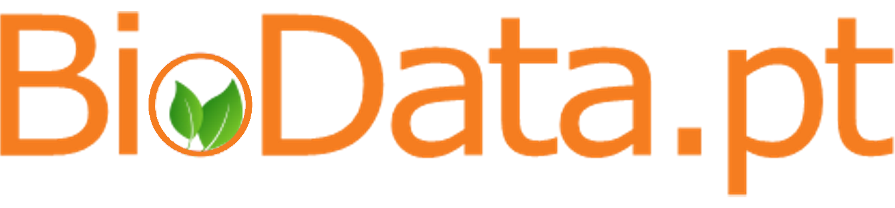

Participation in events
Computational biophysics evaluation of promising smart metallodrug delivery systems, by Inês Pires, organised by Biodata.pt, February 8th

Computer-Guided Development of Novel Drugs Against SARS-CoV-2: From Virtual Screening to the Patents, by Fábio G. Martins, organised by Biodata.pt, November 9th
4th Annual Meeting of the CIBB - thematic area 'Innovative Therapies'- organised by CIBB, October 28th
Molecular Dynamics Studies of Viral Fusion Proteins, by Mariana Valério, organised by Biodata.pt, October 12th
GPU AI programming Bootcamp at Instituto de Sistemas e Robótica, by Open Hackathons and Nvidia. Primarily targeted at the community of Portuguese researchers and students who use GPUs as the main tool for their HPC+AI workloads, September 12th and 13th.
Faster protein pka predictions with deep learning, by Pedro Reis, organised by Biodata.pt, July 6th
Recent Artificial Intelligence tools and architectures for Structural Biology, by Francisco Fernandes, organised by Biodata.pt, June 1st
An overview of mutations distribution within GPCR sub-family A17 in one database - MUG database, by Beatriz Caniceiro, organised by Biodata.pt, May 5th
Coarse graining molecules: The case of phosphoinositides, by Luís Araújo, organised by Biodata.pt, April 6th
VIII EJIBCE, in Coimbra, December 20th
The third of a series of 10 webinars organised by the ELIXIR 3D-BioInfo Community. The series presents the five major aims of the Community around protein structural annotations, protein complexes, protein ligand interactions, protein nucleic acid interactions and protein engineering organised by Biodata.pt, October 19th
BOD is a student-led initiative aiming to promote the exchange of knowledge between students, teachers and researchers from the Bioinformatics and Computational Biology fields, Braga, May 5th-8th

Participated and presented poster at the Structural Biology Summer School (COST ACTION 17104), Vienna, September 7th.

VII EJIBCE - Lisbon, December 20th
Attended the 2018 Web Summit, Lisbon, November 5th-8th.
VI EJIBCE - Lisbon, December 21st
V EJIBCE - Coimbra, December 22nd
Attended the GLISTEN symposium in Oporto, March 19th-31st
Attended Summer School in Computational Biology. Attended a practical course on Molecular Dynamics of Lipid Membranes, September 5-15th
IV EJIBCE - Oeiras, December 21st
Contact
If you wish to contact me please do it through martinsgomes.jose@gmail.com or any of the social networks displayed at the bottom of the navigation menu.